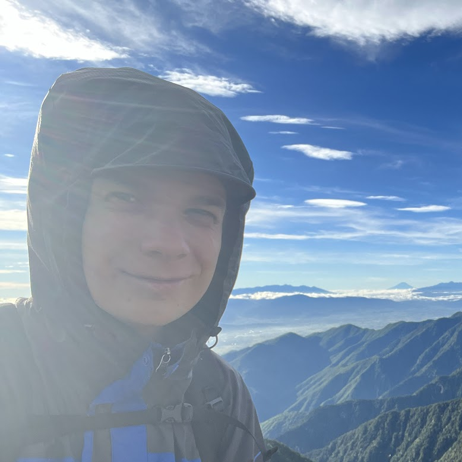

What I Do!
Most of my time is spent designing or making video games, but I also have lots of hobbies. I draw and make pixel art. I play drums in a band, DJ, and make music on my DS Lite. I go snowboarding, scuba diving and cycling. I love being here, and I always try to encourage those around me to explore what they love.
About Me
I love working on projects more than anything. I've been creating toys, gadgets and games my entire life, and nothing beats the feeling of seeing someone having fun with what you made.
I was fortunate to have a career in animation before switching to game development. When I joined this bustling industry, it felt like I had found my tribe.